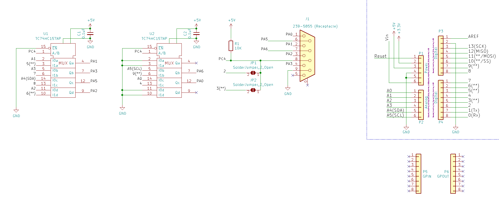

「USBコントローラ→ATARI変換機」変換モード追加アタッチメント
HUYE氏が中心になって開発している
USBコントローラ→ATARI変換機 のver.4.20以降で追加された変換モードを利用するためのアタッチメントです。
- HUYE氏の「USBコントローラ→ATARI変換機」純正基板
- 拙作「USB joypad to X680x0」基板
のいずれかと組み合わせて使います。
本件はHUYE氏が開発しているものです。基板の作図のみ私の担当とさせていただいております。
追加される機能
HUYE氏の解説ページの変換モード一覧に記載の "JAMMA_" で始まる各モードを追加します。
使用する場合は、ATARI-P1(PORT1)のケーブルを外し、ATARI-P3へつなぎかえてください。
また、ATARI-P3を使う場合はATARI-P2(PORT2)のケーブルを外しておいてください。ゲームが誤動作する事があります。
後述する安全上の理由で、ケーブルをつなぎかえる際には都度電源を切る必要があります。
接続するその前に《重要な注意事項》
ケーブルの着脱はX680x0を含む全ての機器の電源を切った状態で行ってください。
この頒布品以外での話ですが、通電中にケーブルを着脱したため、X680x0が故障したという事例を聞いております。
昨今のPCが便利になりすぎて皆忘れているかもしれませんが、X680x0には通電中に着脱されることを意図した構造のコネクタは存在しません。
基板の連結順
本基板はUSB Host Shieldの上に連結します。
つまり、上から順に
- 「USBコントローラ→ATARI変換機」または「USB joypad to X680x0」の基板
- このアタッチメント基板
- USB Host Shield 2.0
- Arduino UNO
のように連結します。
なお、どの変換モードを使用する/使用しないに関係なく、アタッチメント基板は接続したままで構いません。
前述した通り、変換モード名が "JAMMA_" で始まっているモードの場合は、ATARI-P1のケーブルをATARI-P3につなぎかえる必要があります。
回路図および部品配置

部品一覧
| 部品配置 |
部品名 |
秋月電子の通販コード |
解説 |
| - |
専用基板 |
- |
BOOTHにて頒布予定です。
|
| - |
Arduino用6ピン連結コネクタ |
C-04045 |
2個必要 |
| - |
Arduino用8ピン連結コネクタ |
C-04046 |
2個必要 |
| GPIN および GPOUT |
Arduino用8ピン連結コネクタ |
C-04046 |
拙作「USB joypad to X680x0」をお使いの場合に必要です。
|
| - |
M3ネジ穴に適合するプラ製スペーサーを適宜
|
[参考ページ] |
連結コネクタの接触を安定させるために、スペーサーでの固定を推奨します。
絶縁性材料のネジ/ナット/スペーサーを使用してください。
なお、上記連結コネクタを使用した場合、基板同士の隙間は11mm前後になる筈です。
|
| J1 |
ライトアングルの D-sub 9ピン(DE-9) レセプタクルで、半田付け式のボードロックを有するもの |
- |
基板の裏側に実装してください。
基板の表側に実装した場合、動作しないだけでなく、X680x0を含めた各機材の故障の原因になります。
【部品の例】
LinkMan 3223DB9RS1S2 や 3223DB9RS1G1E
RS-PRO 239-5855
TE 5747844-4
ボードロックの無いレセプタクルを実装する場合、絶縁性材料のM3ボルトやナットで補強してください
|
| U1 および U2 |
東芝製 TC74HC157AP |
- |
他の部品を使う場合、遅延時間が十分短いことをデータシートで必ず確認してください。 |
| R1 |
10kΩの1/6Wまたは1/4W抵抗 |
R-25103 |
|
| C1 および C2 |
耐圧16V以上で 0.1uF のセラミックまたは積層セラミックコンデンサ |
P-04064 |
|
| - |
粘着式の絶縁テープ |
- |
U2の端子近傍にUSB Host Shield (UHS2)のUSBコネクタが存在するため、短絡事故を抑止するために必要です。
絶縁テープを貼る位置は基板裏面に印刷してあります。
|
JP1 および JP2 は半田を盛らずにそのままにしておいてください。
故障かな? と思ったら
動作が不安定になる場合
連結コネクタ部で接触不良を起こす事例が報告されています。
- Arduinoが部分的にしか動作していないように見える
- UHS2から向こう側が認識されない
など、特定の現象に限りません。
他の基板を含めた作者の経験では、
- Arduinoに上カバーを付けている場合
- 基板間のスペーサーを取り付けていない場合
- 基板間のスペーサーの長さが不適切な場合
に誤動作の頻度が上がるように思います。
特定のボタン/レバー方向だけ操作を受け付けない、または入力され続ける
上記の接触不良を確認しても現象が変わらない場合、
- U1やU2回りの半田付け不良
- U1やU2自体の故障
が疑われます。
{kind=link}